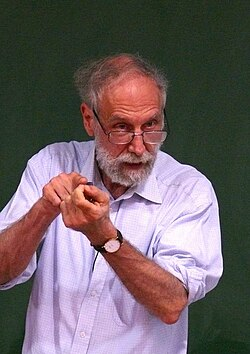

Alain Connes | |
|---|---|
 Alain Connes in 2012 | |
| Born | 1 April 1947[1] Draguignan, France |
| Alma mater | École Normale Supérieure Pierre and Marie Curie University |
| Known for | Baum–Connes conjecture Noncommutative geometry Noncommutative standard model Operator algebras Thermal time hypothesis |
| Awards | Peccot-Vimont Prize (1976) CNRS Silver Medal (1977) Ampère Prize (1980) Fields Medal (1982) Clay Research Award (2000) Crafoord Prize (2001) CNRS Gold medal (2004) |
| Scientific career | |
| Fields | Mathematics Particle physics |
| Institutions | Collège de France IHÉS Ohio State University Vanderbilt University |
| Thesis | A Classification of Factors of Type III (1973) |
| Jacques Dixmier | |
Doctoral students | Jean-Benoît Bost Georges Skandalis |
| Website | alainconnes |
.jpg){kind=link}
Alain Connes (French: [alɛ̃ kɔn]; born 1 April 1947[1]) is a French mathematician, known for his contributions to the study of operator algebras and noncommutative geometry. He was a professor at the Collège de France, Institut des Hautes Études Scientifiques, Ohio State University and Vanderbilt University. He was awarded the Fields Medal in 1982.[2][1][3][4]
Career
Alain Connes attended high school at Lycée Saint-Charles in Marseille, and was then a student of the classes préparatoires in Lycée Thiers. Between 1966 and 1970 he studied at École normale supérieure in Paris, and in 1973 he obtained a PhD from Pierre and Marie Curie University, under the supervision of Jacques Dixmier.[1]
From 1970 to 1974 he was research fellow at the French National Centre for Scientific Research and during 1975 he held a visiting position at Queen's University at Kingston in Canada.[5]
In 1976 he returned to France and worked as professor at Pierre and Marie Curie University until 1980 and at CNRS between 1981 and 1984. Moreover, since 1979 he holds the Léon Motchane Chair at IHES.[6] From 1984 until his retirement in 2017 he held the chair of Analysis and Geometry at Collège de France.[5][7]
In parallel, he was awarded a distinguished professorship at Vanderbilt University between 2003 and 2012,[8] and at Ohio State University between 2012 and 2021.
Research
Connes's main research interests revolved around operator algebras. Besides noncommutative geometry, he has applied his works in various areas of mathematics and number theory, differential geometry.[1][9][3][4] Since the 1990s, he developed noncommutative geometry.[10]
In his early work on von Neumann algebras in the 1970s, he succeeded in obtaining the almost complete classification of injective factors. He also formulated the Connes embedding problem.
Following this, he made contributions in operator K-theory and index theory, which culminated in the Baum–Connes conjecture. He also introduced cyclic cohomology in the early 1980s as a first step in the study of noncommutative differential geometry.[11][12][13][14]
He was a member of Nicolas Bourbaki.[15] Over many years, he collaborated extensively with Henri Moscovici.[1]
Awards and honours
Connes was awarded the Peccot-Vimont Prize in 1976,[16] the Ampère Prize in 1980, the Fields Medal in 1982,[17][18] the Clay Research Award in 2000[19] and the Crafoord Prize in 2001.[20][21][22] The French National Centre for Scientific Research granted him the silver medal in 1977[23] and the gold medal in 2004.[24][25][26][27][28]
He was an invited speaker at the International Congress of Mathematicians in 1974 at Vancouver and in 1986 at Berkeley, and a plenary speaker at the ICM in 1978 at Helsinki.

He was awarded honorary degrees from Queen's University at Kingston in 1979,[29] University of Rome Tor Vergata in 1997,[30] University of Oslo in 1999,[31] University of Southern Denmark in 2009, Université libre de Bruxelles in 2010[32] and Shanghai Fudan University in 2017.
Since 1982 he has been a member of the French Academy of Sciences.[33] He was elected member of several foreign academies and societies, including the Royal Danish Academy of Sciences and Letters in 1980,[34] the Norwegian Academy of Science and Letters in 1983,[35] the American Academy of Arts and Sciences in 1989,[36] the London Mathematical Society in 1994,[37] the Canadian Academy of Sciences in 1995 (incorporated since 2002 in the Royal Society of Canada),[38] the US National Academy of Sciences in 1997,[39] the Russian Academy of Science in 2003[40] and the Royal Academy of Science, Letters and Fine Arts of Belgium in 2016.[41]
In 2001 he received (together with his co-authors André Lichnerowicz and Marco Schutzenberger) the Peano Prize for his work Triangle of Thoughts.[42]
Family
Alain Connes is the middle-born of three sons. Both his parents lived to be 101 years old. He married in 1971.[1]
Books
- Alain Connes and Matilde Marcolli, Noncommutative Geometry, Quantum Fields and Motives, Colloquium Publications, American Mathematical Society, 2007, ISBN 978-0-8218-4210-2 [1]
- Alain Connes, André Lichnerowicz, and Marcel-Paul Schutzenberger, Triangle of Thought, translated by Jennifer Gage, American Mathematical Society, 2001, ISBN 978-0-8218-2614-0
- Jean-Pierre Changeux and Alain Connes, Conversations on Mind, Matter, and Mathematics, translated by M. B. DeBevoise, Princeton University Press, 1998, ISBN 978-0-691-00405-1
- Alain Connes, Noncommutative Geometry, Academic Press, 1994, ISBN 978-0-12-185860-5[43]
See also
- Bost–Connes system
- Cyclic category
- Cyclic homology
- Factor (functional analysis)
- Higgs boson
- C*-algebra
- Noncommutative quantum field theory
- M-theory
- Groupoid
- Spectral triple
- Criticism of non-standard analysis
- Riemann hypothesis
References
- ^ a b c d e f g Jackson, Allyn (2021). "Interview with Alain Connes". Celebratio Mathematica. Retrieved 18 May 2023.
- ^ O'Connor, John; Robertson, Edmund. "Alain Connes". MacTutor History of Mathematics archive. Retrieved 19 May 2023.
- ^ a b Skandalis, Georges; Goldstein, Catherine (2007). "An interview with Alain Connes, part I". EMS Newsletter. 63. European Mathematical Society: 25–30.
- ^ a b Skandalis, Georges; Goldstein, Catherine (2008). "An interview with Alain Connes, part II". EMS Newsletter. 67. European Mathematical Society: 29–33.
- ^ a b "Curriculum Vitae". Alain Connes. 22 April 2021. Retrieved 8 September 2022.
- ^ "Alain Connes, emeritus professor since 2017". IHES. Retrieved 26 May 2023.
- ^ "Alain Connes". Collège de France (in French). 11 April 2022. Retrieved 26 May 2023.
- ^ "World-class mathematician joins Vanderbilt faculty". Vanderbilt University. 4 September 2003. Retrieved 18 May 2023.
- ^ Alexander Hellemans, "The Geometer of Particle Physics" Scientific American, 24 July 2006
- ^ Sabine Hossenfelder (2018). Lost in Math: How Beauty Leads Physics Astray. Basic Books. ISBN 978-0465094257.
- ^ Moore, Calvin (1982). "The work of Alain Connes" (PDF). Notices of the American Mathematical Society. 29 (6): 499–501.
- ^ Seda, Anthony Karel (1984). "One aspect of the work of Alain Connes" (PDF). Newsletter of the Irish Mathematical Society. 11: 38–48. doi:10.33232/BIMS.0011.38.48.
- ^ Lesniewski, Andrew (1997). "Noncommutative Geometry" (PDF). Notices of the American Mathematical Society. 44 (7): 800–805.
- ^ Cornelissen, Gunther; Landsman, Klaas; van Suijlekom, Walter (2010). "The flashes of insight never came for free" (PDF). Nieuw Archief voor Wiskunde. 11 (5): 250–256.
- ^ Mashaal, Maurice (2006). Bourbaki: a secret society of mathematicians. American Mathematical Society. p. 18. ISBN 978-0-8218-3967-6.
- ^ "Cours et Prix Claude-Antoine Peccot" [Claude-Antoine Peccot Lectures and Prizes]. College de France (in French). 11 May 2022. Retrieved 26 May 2023.
- ^ Albers, Donald J.; Alexanderson, G. L.; Reid, Constance (1986). "International mathematical congresses. An illustrated history 1893 – 1986". Springer-Verlag. Retrieved 2 December 2018.
- ^ IMU Secretariat. "Fields Medal – International Mathematical Union (IMU)". International Mathematical Union. Retrieved 2 December 2018.
- ^ "Research Awards". Clay Mathematics Institute. Retrieved 26 May 2023.
- ^ "Crafoord Prize to one of the world's foremost mathematicians". Royal Swedish Academy of Sciences. 24 January 2001. Retrieved 26 May 2023.
- ^ "Crafoord Prize Laureates". Royal Swedish Academy of Sciences. 2000. Retrieved 2 December 2018.
- ^ Holden, Constance (2001). "French Mathematician Wins Crafoord Prize". Science.
- ^ Burgos, Valérie (31 January 2023). "Médailles d'argent du CNRS 1960-2010" [Silver medals of the CNRS 1960-2010]. Comité pour l'histoire du CNRS (in French). doi:10.58079/n1ag. Retrieved 26 May 2023.
- ^ "Alain Connes, mathématicien, Médaille d'or du CNRS 2004" [Alain Connes, mathematician, Gold Medal of CNRS 2004]. CNRS (in French). 2004. Archived from the original on 21 January 2023. Retrieved 26 May 2023.
- ^ "Alain Connes, Médaille d'or 2004 du CNRS" [Alain Connes, 2004 Gold Medal of CNRS] (PDF). CNRS (in French). 2004.
- ^ "Alain Connes: indomitable explorer" (PDF). A Year at CNRS 2004: 10–11. 2005.
- ^ Dumas, Cécile (9 November 2004). "Alain Connes, médaillé d'or du CNRS" [Alain Connes, gold medal of the CNRS]. Sciences et Avenir (in French). Retrieved 26 May 2023.
- ^ "Vanderbilt math professor Alain Connes receives prestigious French science award". Vanderbilt University. 2005. Retrieved 26 May 2023.
- ^ "1858-2011 Honorary Degree Recipients" (PDF). Queen's University at Kingston. Retrieved 26 May 2023.
- ^ "Lauree Honoris Causa" (in Italian). University of Rome Tor Vergata. Retrieved 26 May 2023.
- ^ "Æresdoktorer ved UiO 2000-2008" [Honorary Doctorates UiO 2000-2008] (in Norwegian). Oslo University.
- ^ "ULB's honorary doctorates". Université libre de Bruxelles. Retrieved 26 May 2023.
- ^ "Alain Connes". French Academy of Sciences. Retrieved 19 May 2023.
- ^ "Alain Connes". Royal Danish Academy of Sciences and Letters. Retrieved 19 May 2023.
- ^ "Utenlandske medlemmer" [Foreign members]. Norwegian Academy of Science and Letters (in Norwegian Bokmål). Retrieved 19 May 2023.
- ^ "Alain Connes". American Academy of Arts and Sciences. 9 February 2023. Retrieved 19 May 2023.
- ^ "London Mathematical Society Honorary Members" (PDF). London Mathematical Society.
- ^ "Member Directory". Royal Society of Canada. Retrieved 19 May 2023.
- ^ "Alain Connes". National Academy of Sciences. Retrieved 19 May 2023.
- ^ "Конн А.. – Общая информация" [Conn A. – General information]. Russian Academy of Sciences (in Russian). Retrieved 19 May 2023.
- ^ "Alain Connes". Royal Academy of Science, Letters and Fine Arts of Belgium (in French).
- ^ "Premio Peano | Associazione Subalpina Mathesis" (in Italian). 3 November 2015. Retrieved 26 May 2023.
- ^ Segal, Irving (1996). "Book Review: Noncommutative Geometry, by Alan Connes" (PDF). Bulletin of the American Mathematical Society. New Series. 33 (4): 459–465. doi:10.1090/s0273-0979-96-00687-8. Archived (PDF) from the original on 9 October 2022.
External links
- Alain Connes Official Web Site containing downloadable papers, and his book Non-commutative geometry, ISBN 0-12-185860-X.
- Alain Connes at the nLab
- Alain Connes's Standard Model
- An interview with Alain Connes and a discussion about it
- Alain Connes at the Mathematics Genealogy Project
- Alain Connes publications indexed by Google Scholar